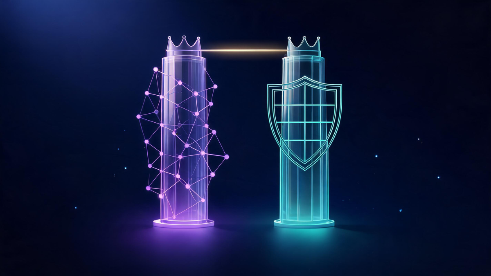

Cybersecurity Salaries in 2026: Role-by-Role Pay Guide

Quick answer
The median cybersecurity salary in the US is $129,180 per year ($62.11/hour) as of May 2025 BLS data — about 2.5× the national median wage. The lowest 10% earn under $75,090 and the highest 10% earn over $199,850. Entry-level SOC roles start at $50,000–$95,000, engineers with CISSP earn $150,000–$185,000, and CISOs average $321,000–$385,000. Employment is projected to grow 21% from 2025 to 2035.
In this guide
Key Takeaways
- Median pay for information security analysts is $129,180 (May 2025, BLS) — roughly 2.5× the all-occupation median of $50,980.
- The earnings ceiling is high: top 10% earn more than $199,850, and CISOs average $321,000–$385,000.
- Entry is accessible without an elite degree: SOC Tier-1 roles start $50,000–$85,000, and certs like Security+ open doors.
- Location matters — San Jose metro averages $175,520, the highest in the US.
- Job security is exceptional: 21% projected growth (2025–2035), much faster than average.
Cybersecurity salaries in 2026 range from about $50,000 at entry level to more than $385,000 at the executive tier — with a median of $129,180 that makes security one of America's best-paying careers. Whether you are planning your first certification or negotiating a senior offer, this guide breaks down what each role actually pays in 2026, where the money is concentrated, and which factors move your offer the most.
Security has become one of the few technology fields where demand has consistently outrun supply for over a decade. That imbalance shows up directly in paychecks: the median information security analyst out-earns not just the average American worker, but the average IT professional as well. Below, we break the field down by role, location, experience and specialization — using BLS data as the anchor and 2026 industry salary guides for the ranges BLS does not publish.
What Is the Average Cybersecurity Salary in 2026?
The most reliable anchor is the U.S. Bureau of Labor Statistics: the median annual wage for information security analysts was $129,180 in May 2025 — the equivalent of $62.11 per hour. Half of all analysts earn more than that figure and half earn less. The spread around the median is wide, and it is the spread that tells the real career story: the lowest 10 percent earned less than $75,090, while the highest 10 percent earned more than $199,850.
Industry salary trackers put the field-wide average slightly higher, at roughly $135,969 in 2026 once senior specialists are included. So how much do cybersecurity jobs pay across all titles? The field-wide answer sits between the $75,090 floor and the $199,850 ceiling. For context, the median wage across all computer and IT occupations was $109,470 in May 2025 — meaning security specialists out-earn the broader IT field, not just the general workforce. Within specific industries, pay climbs further: analysts in the Information sector earned a median of $138,650.
Cybersecurity Salary by Role (2026)
Cybersecurity is not one job — it is a ladder of specializations, and the pay gap between the bottom and top rungs is among the widest in tech. Where you sit on that ladder matters more than almost any other factor in your paycheck.
| Role | Typical Pay (US, 2026) | Level |
|---|---|---|
| SOC Analyst (Tier 1) | $50,000 – $85,000 | Entry |
| Cybersecurity Analyst | $75,000 – $105,000 | Mid |
| Penetration Tester | ~$119,895 (leads up to $168,500) | Mid-Senior |
| Cybersecurity Engineer | $110,000 – $165,000 | Senior |
| Engineer with CISSP | $150,000 – $185,000 | Senior+ |
| Computer & Information Systems Manager | $175,140 median (BLS) | Leadership |
| CISO | $321,000 – $385,000 avg | Executive |
At the entry gate, SOC (Security Operations Center) Tier-1 analysts — the professionals monitoring alerts and triaging incidents — typically earn between $50,000 and $85,000 depending on the source and market. Mid-level roles follow: the cybersecurity analyst salary band runs $75,000–$105,000 in 2026. Offensive-security specialists do better still: penetration testers average about $119,895, with lead practitioners reaching $168,500 according to EC-Council salary data.
Engineering roles push higher. Cybersecurity engineers earn roughly $110,000–$165,000 in mid-to-senior brackets, and adding a CISSP certification pushes the typical engineer band to $150,000–$185,000. At the leadership tier, computer and information systems managers earn a BLS median of $175,140 — and at the very top, CISO compensation operates in a different universe: Salary.com puts the average at $385,165, Glassdoor's median sits at $321,000, and executive-search data shows median total compensation near $403,000.
Entry-Level Cybersecurity Salaries
The entry market is wider than most guides admit — and the differences come down to role type and geography rather than pedigree. A strict SOC Tier-1 monitoring role in a lower-cost market can start near $50,000–$70,000, while the broader entry band across analyst titles runs $70,000–$95,000 in 2026. Employers consistently value demonstrable skills — a home lab, Security+, hands-on triage experience — over prestigious degrees.
This is also the stage where career-changers ask whether age matters. It largely does not — many professionals transition into security from IT support, networking, or system administration in their late twenties and thirties, and hiring managers tend to read that background as an asset: you have already seen how systems fail. The typical entry requirements remain a bachelor's degree in a computing field or equivalent experience, with certifications doing the heavy lifting for career-switchers.
Highest-Paying States & Cities
Geography moves security pay more than almost any credential. The West Coast tech corridor dominates: the San Jose-Sunnyvale-Santa Clara metro averages $175,520 — the highest in the nation — with San Francisco close behind at $168,160. California specialists overall earn between $127,000 and $226,000, and ZipRecruiter's 2026 state rankings put Washington State at the top, with the DC metro area close behind.
| Location | Typical Pay (US, 2026) | Note |
|---|---|---|
| San Jose-Sunnyvale-Santa Clara, CA | $175,520 avg | Highest-paying US metro |
| San Francisco, CA | $168,160 avg | Top-2 metro |
| California (specialists) | $127,000 – $226,000 | Wide senior band |
| Washington State | Above national avg | Tops state rankings |
| US National Average | ~$135,969 | All roles, all states |
The caveat is cost of living: a $175,520 San Jose salary and a $120,000 remote-friendly Midwest salary can converge fast after housing. The practical play is to compare offers against local costs — or target the growing remote-elite segment that pays Bay Area rates without the Bay Area rent.
What Factors Move Your Cybersecurity Salary
Five levers consistently separate the top of the pay band from the bottom, and they compound: each one multiplies the effect of the others.
- Certifications: The clearest documented jump is CISSP — engineers holding it earn $150,000–$185,000 versus $110,000–$165,000 without. Security+ remains the standard entry key; CISM anchors the management track.
- Specialization: Cloud security and AI security command the strongest 2026 premiums — they sit where budget growth is fastest.
- Industry: The Information sector pays a $138,650 median (BLS) — finance and tech employers consistently outbid government and education for the same titles.
- Location: As the table above shows, the same role can pay $50,000+ more in San Jose than the national average.
- Experience ladder: Pay compounds at each rung — the jump from analyst to engineer to architect to leadership is steeper in security than in most IT tracks.
Cybersecurity vs AI: Which Pays More?
It is the question every career-changer is asking — and the data gives a nuanced answer. At the research tier, AI-adjacent roles edge ahead: computer and information research scientists earn a median of $140,300 versus $129,180 for information security analysts. But the picture flips with seniority and demand: security leadership (CISO, $321,000–$385,000) outearns most AI roles, and the fastest-growing premium niche in security is AI security itself — protecting the models everyone else is deploying. BLS explicitly cites increased AI adoption as a driver of security hiring growth through 2035.

Is Cybersecurity Still a Good Career in 2026?
The numbers make the case better than any recruiter could. Employment of information security analysts is projected to grow 21 percent from 2025 to 2035 — much faster than the average for all occupations — and BLS attributes that growth directly to rising AI adoption and e-commerce expansion. The median salary sits at 2.5× the national median, the ceiling crosses $199,850, and the entry path runs through certifications rather than a decade of schooling.
Frequently Asked Questions
Can I make $200,000 a year in cybersecurity?
Yes. The highest-earning 10 percent of information security analysts make more than $199,850 per year according to BLS data, and cybersecurity engineers with CISSP certifications commonly earn $150,000–$185,000. At the leadership level, CISO compensation reaches $321,000–$385,000 on average.
What pays more, cybersecurity or AI?
At the research level, AI-adjacent roles pay slightly more: computer and information research scientists earn a median of $140,300 versus $129,180 for information security analysts. However, security leadership outearns most AI roles — CISOs average $321,000–$385,000 — and the fastest-growing premium niche is AI security itself.
Is cybersecurity still a good career in 2026?
Yes. The BLS projects 21 percent employment growth from 2025 to 2035 — much faster than average — and the median salary of $129,180 is about 2.5 times the national median wage. AI adoption is increasing rather than reducing the need for security professionals.
Is 25 too late for cybersecurity?
No. Many cybersecurity professionals enter in their late twenties or thirties, often moving from IT support, networking or system administration roles. Employers frequently value related work experience plus certifications like Security+ over a traditional security degree.
Is cybersecurity a 9-5 job?
It depends on the role. Security Operations Center (SOC) teams run 24/7 shifts, incident responders may work on-call rotations, while governance, compliance and architect roles typically follow standard business hours.
Is cybersecurity good paying?
Yes. The median information security analyst earns $129,180 per year — about 2.5 times the median wage for all US occupations ($50,980). Entry-level roles start at $50,000–$95,000, and the average across the field is roughly $135,969 in 2026.
Keep Exploring
Keep exploring Veritya Daily's security coverage: build your foundation with our guide to modern cyber security solutions, see how intelligent automation is reshaping security operations workflows, understand the risks of budgeting for certifications and career moves — security training adds up fast — and check how quantum computing is reshaping encryption economics in our IBM Quantum pricing breakdown.
📚 Sources & Citations (10)
- U.S. Bureau of Labor Statistics — Information Security Analysts, Occupational Outlook Handbook (May 2025 wage data; 2025–2035 employment projections)
- Kore1 — Cybersecurity Salary Guide 2026: From SOC Analyst to CISO (March 2026)
- UniHackers — Cybersecurity Salary Guide 2026: US Pay by Role (September 2026; BLS, Robert Half & EC-Council sourced)
- Destination Certification — Top 10 Highest-Paid Cybersecurity Jobs in 2026 (Salary.com CISO data, April 2026)
- Cybersecurity Ventures — 2026 CISO Salary and Compensation Data (Glassdoor median)
- ZipRecruiter — Average Cyber Security Salary by State (2026)
- University of San Diego — Top Cybersecurity Salaries in California (2026)
- Indeed — Cybersecurity Analyst, SOC Analyst & Penetration Tester salary pages (US, 2026)
- CCI Training — Highest Paying Cybersecurity Jobs: State & City Salary Guide (October 2025)
- MyComputerCareer — Cybersecurity Salary: What You Can Earn in 2026